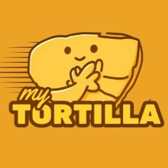

Tentang Kami
Pengenalan
myTortilla
MyTortilla adalah usaha kuliner yang berfokus pada pembuatan dan penjualan tortilla dengan cita rasa lezat, dan praktis. Setiap produk dibuat dari bahan berkualitas serta diolah secara higienis untuk memastikan kepuasan dan kepercayaan pelanggan.

Menu Kami
Yang
Diinginkan oleh semua orang

Crispy Fried Tortilla
Tortilla renyah yang digoreng hingga keemasan, memberikan tekstur gurih dan rasa lezat di setiap gigitan.

Frozen Tortilla Wraps
Campuran daging & sayur yang di balut kulit tortilla dingin yg siap goreng kapan saja.

Mini Tortilla
Versi mini dari tortilla yang siap jadi kawan ngemil kamu di mana aja.
Testimoni
Ulasan Pelanggan
Hubungi Kami Untuk
Pemesanan
Siap untuk merasakan kelezatan myTortilla? Isi formulir di bawah ini dan kami akan segera menghubungi Anda melalui WhatsApp.